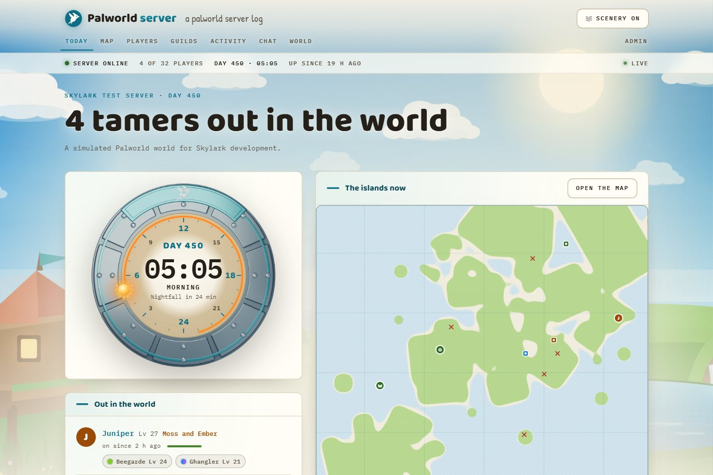
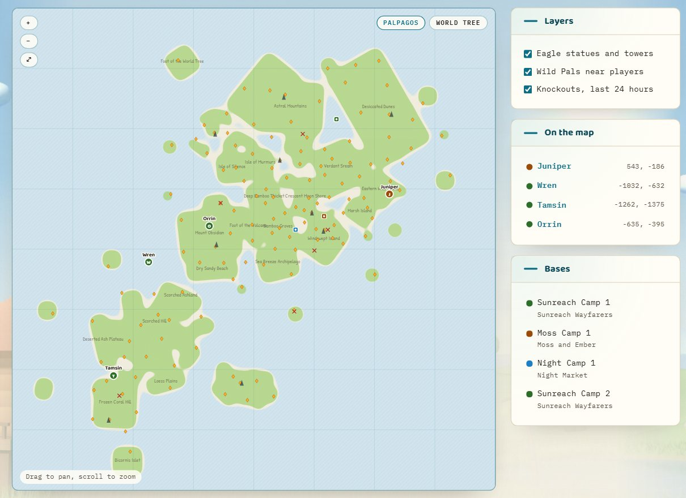
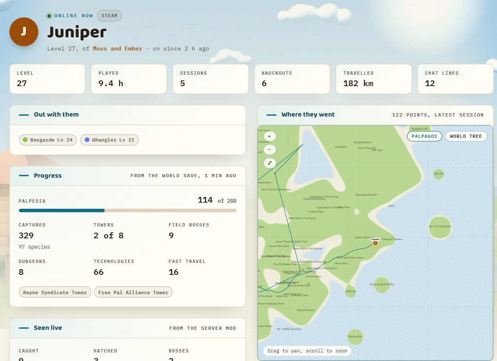
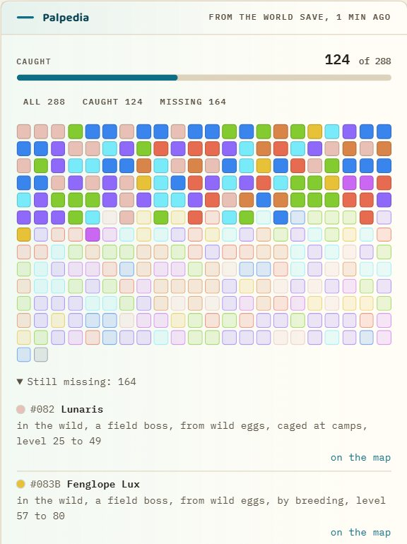
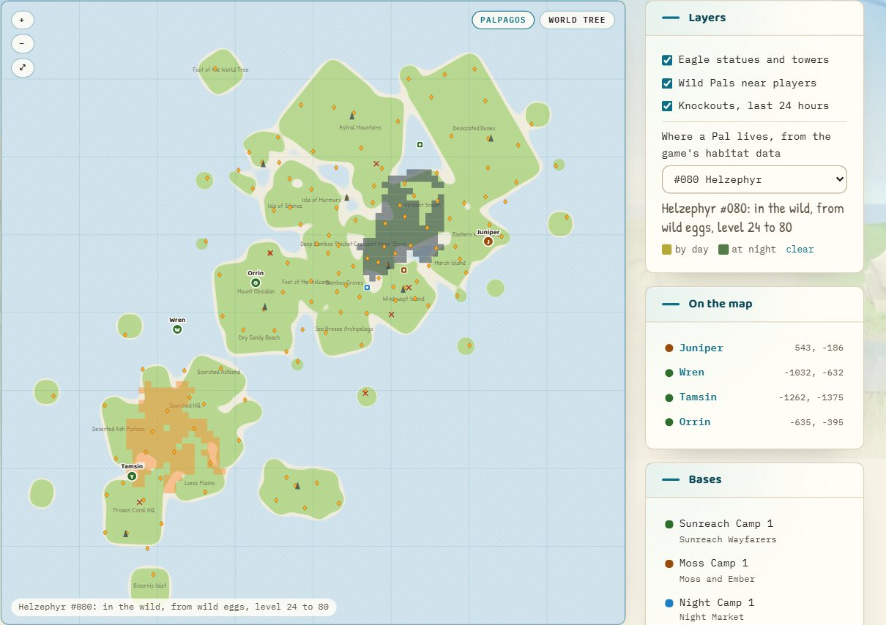
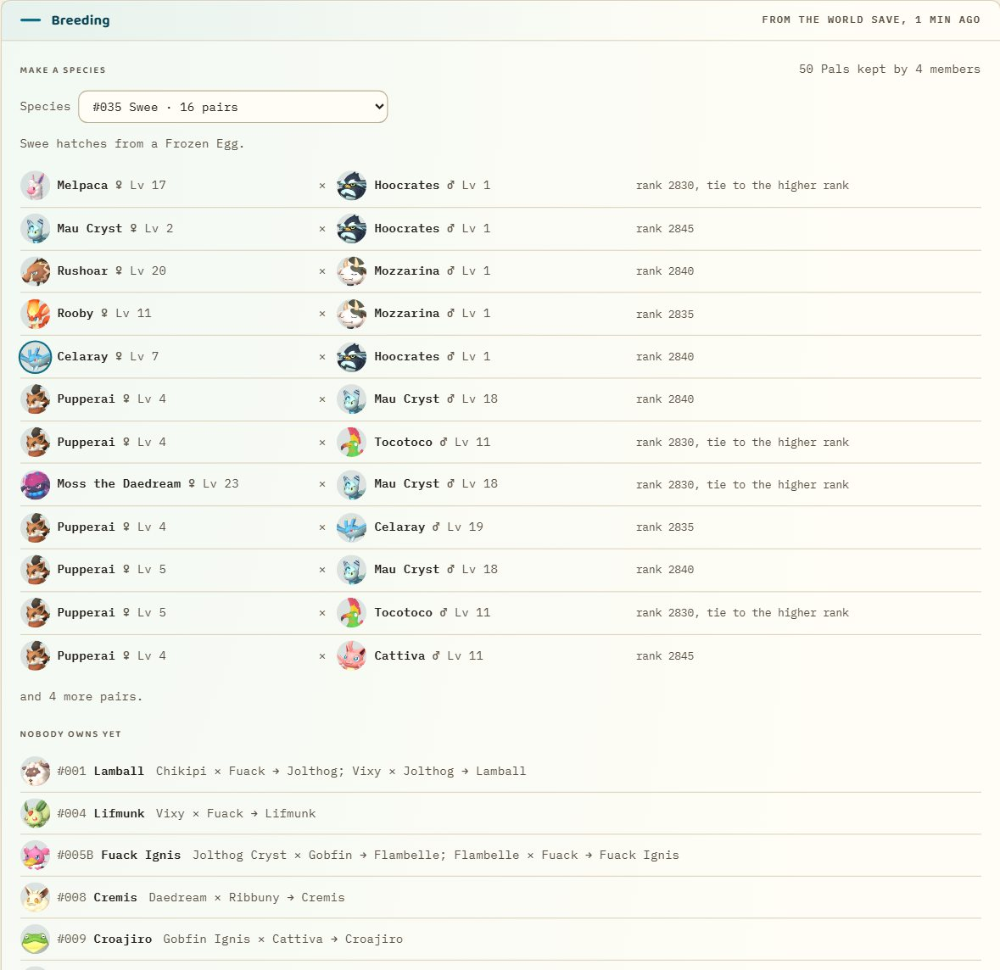
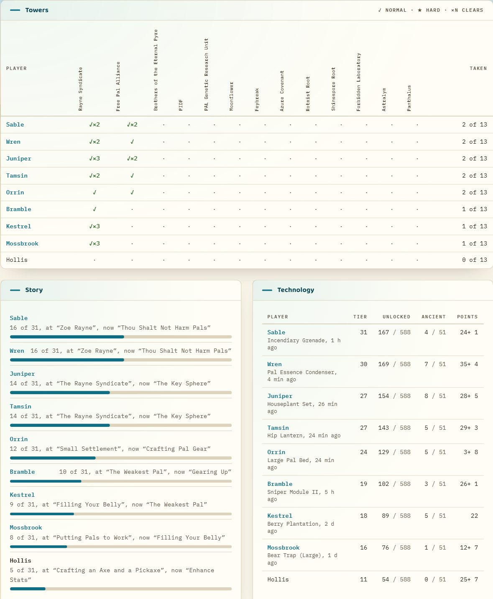

Only in Skylark

The islands, live
An original map drawn from the game's own region data, with the Great Eagle Statues and towers. Players move on it as they play, next to the bases, the wild Pals around them and the day's knockouts.

Player pages
Playtime, sessions, level history, knockouts and distance travelled for everyone who plays, with the Pals out with them right now and the trail of each session on the map.

The Palpedia, on your server
Every entry each player has caught, from the world save, and what is still missing, with how each species is obtained from the game's own tables: in the wild by day or night, from eggs, by fishing, from cages, raids or breeding. Guild pages show the same across the members, and who has what.

Where the missing ones live
Pick a Pal on the map and see where it lives, by day and at night, with its wild levels, drawn from the game's own habitat data onto Skylark's map. A missing entry on a player's page takes you straight there.

Breeding, from the Pals you keep
Every guild page lists the Pals in its members' boxes and parties from the world save and works out what they can breed: pick a species and see which of your own pairs make it, the species nobody owns yet with the shortest chain of breedings from what you have, and the eggs waiting in chests and incubators. The rule is the game's own, read from the server's code, down to how a tie between two ranks is settled.

The progression board
One page for the whole server's progress, from the world save: who has beaten which tower and how often, each player's story stage by the chain the game's own quest manager tracks, their technology tier and ancient technologies, the field bosses on the map coloured by who beat them, each guild's lab research with the one under way, and every player's level against their playtime.
Sun dial
The in-game day and hour on a capture-sphere dial, live from the server's own clock. It counts down to nightfall and dawn at the hours the game really uses, and runs at your server's day and night speeds.
Nothing to install for players
Everything comes from the server's own REST API, its world snapshot and its console. Friends open a link; the collector does the rest.
Also on the site
- Who is online, with their level, health, guild and Pals, and everything that happened today
- Guilds with their members and bases, their Palpedia, their kept Pals with a breeding calculator, chat, and a live activity feed
- The progression board: towers, story, technology, field bosses and guild research from the world save
- The world's settings, the server's history and this week's leaders
- An admin area for the collector, server actions (announce, save, shut down with a countdown, kick, ban), backups and a history rebuild
- Switches to hide positions, bases, Pals, chat or guild chat, and settings for how long raw data is kept
Install
-
Run the site.
On Railway, in one click. It sets up the site, its database and a backup volume in your own Railway account:

Or with Docker Compose, on a machine the collector can reach:
git clone https://github.com/oddessentials/skylark.git && cd skylark cp .env.example .env docker compose --profile site up -d --build
-
Set the admin password.
Open
/adminon port 3000; the first visit sets it. Copy the collector secret from the Collector page. -
Run the collector beside the server.
Download it for Windows x64, Linux x64 or Linux arm64 from a release, or build it with Go 1.27. Give it the site's address and secret and the server's admin password. On Windows it can start the server itself; on Linux it follows the server's Docker container or console output.
The server needs its REST API on, the launch argument
-enable-gamedata-apifor positions, Pals and bases, andLogFormatType=Jsonfor joins and chat as they happen. The collector reference has every setting.
What stays private
The collector sends only to your own site, signed with its secret. IP addresses stay on the server unless you ask for them, and platform ids go only to your site, which never shows them or IP addresses on a public page.
Free and open
MIT licensed. The source, the API contract and the collector are all public. Game facts come from the free dedicated server's own files.